Greedy Algorithms - Module 3 (Stable Marriage-I)
Lecture - 11
Greedy Algorithms - Module 3 (Stable Marriage-I)
(Refer Slide Time: 00:11)

Welcome to the third module in the third week of ‘Getting Started with Competitive Programming.’ This week we have been looking at ‘Greedy Algorithms’ and I hope that the couple of examples that you have seen so far are already giving you a feel for how these things work. This time we are going to look at an example, which is actually a computer science classic, and it is called the ‘Stable Marriage’ problem.
This problem has enormous applications and really interesting history. If you are curious about some of the trivia that is associated with this problem, please check out some of the links in the description, which include a pointer to a very cool number file video on the topic and a couple of other really interesting articles. I will be presenting this as a stand-alone puzzle because of limitations of time and will really be doing no justice to the amazing history of this problem.
Please do learn more about it after you are done with this video, if you feel so inclined. Back to the context of contests, this problem did make an appearance in one of the ICPC Regionals. It is also available on the CodeChef problem archive. You can find links to both versions in the description of this video and you can use either one for practice, whatever is more convenient. The tasks are exactly the same and if I remember correctly, the limits are also kind of similar. So, it should really make no difference. With all that said, let us get to the problem statement and figure out what our task is going to be.
(Refer Slide Time: 01:47)


The setting is the following. We are given two groups of people, which we will refer to as ‘men’ and ‘women’ and there is always going to be the same number of them. Let us say that there are N men and N women for a total of 2N people. By the way, let me just mention that this terminology, using the word ‘marriage’ to refer to the problem itself and to refer to these groups of people as men and women, is traditional even in the computer science research literature around this problem.
So, it is not just from the contest problem statement. Do not be fooled into thinking that this is just a puzzle about matching men and women and getting them into happy marriages. It just turns out that this terminology is a convenient abstraction for modeling a wide array of application scenarios, some of which may even occur to you as we go through the problem statement together.
For a more comprehensive view of the many scenarios that can be thought of as instances of this stable marriage problem, I will point you to some of the links in the description. Let us now get back to the problem statement and consider what else we are given. We have these two groups of people: N men and N women, and it turns out that this is a rather judgmental group of people.
Every individual here has feelings for the people in the opposite group, and the way these feelings are modeled or given to us is by way of rankings. In particular, every man will have a ranking over the set of all women. You can think of a ranking as simply a permutation of the opposite set. In this case, the set of all women. Similarly, all the women also have rankings over the set of men. These rankings are really individual preferences and there need not be any relationship between the rankings of two different people.
You can think of the input as just being N permutations of the set of women corresponding to the N men and N permutations of the set of men corresponding to the N women. Often we will think of these permutations literally as ranked preferences and we will talk about the top preference or the second favorite and things like that. In this example, for instance, the ‘king of spades’ seems to like the ‘queen of diamonds’ the most and that is his top preference. The second-best preference is going to be the ‘queen of spades’ and so on and so forth.
We will use that kind of positional terminology to refer to people on a certain rank list. Hopefully, the input is clear. As I said, it is going to be 2N people and correspondingly N permutations of the men and N permutations of the women. What is the output?
(Refer Slide Time: 04:44)
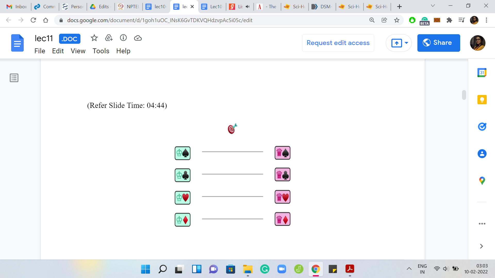 
What we want to output is essentially a bijection between the men and the women, which is to say that we want to match every man with exactly one woman. There are many different ways to match men with women. In fact, if you think about it, you will realize that there are N factorial possible matchings. Every matching can be thought of as a permutation of one of these sets and there is going to be N factorial of them.
We are not interested in just any arbitrary matching. Since we are given these preferences, we want a matching, which in some sense makes everyone happy. We do have to be careful about what we mean by a matching that makes everyone happy though. A natural definition may be to say, well, why do not we just match everyone with their favorite person from the other side. An immediate issue with this is that it is possible that multiple men, for example, have the same choice of favorite woman or multiple women have the same choice of their favorite man.
In this case, coming up with a well-defined matching that gives everybody their favorite person from the other side is going to be impossible. You could say that in these cases, we just say that there is no matching possible. But it turns out that we are going to have a more interesting definition for what we want from our matching.
To be able to understand what we mean by a so-called stable matching, which you might have guessed is what we are going to be looking for from the name of the problem, we first have to define an intermediate notion called a ‘blocking pair.’ The notion of a blocking pair only makes sense in the context of a matching. As with most things, let us try to learn about this definition through a concrete example.
(Refer Slide Time: 06:28)
 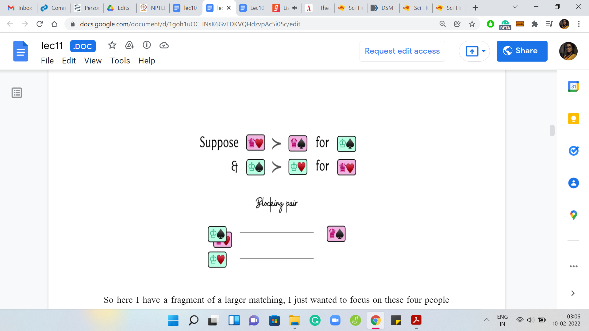
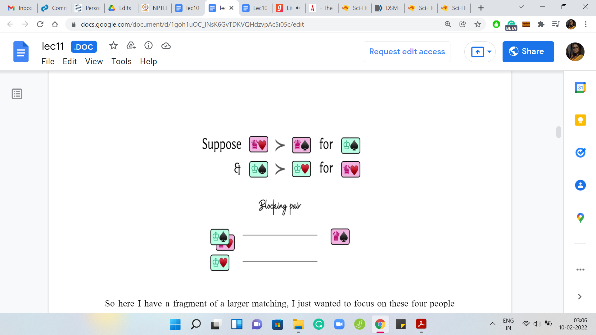
Here, I have a fragment of a larger matching. I just wanted to focus on these four people here. That is why I am only showing you a part of the matching. We have a situation where the ‘king of spades’ has been matched to the ‘queen of spades,’ and the ‘king of hearts’ has been matched to the ‘queen of hearts.’
Ssuppose that in terms of preferences, we had the following situation. Let us say that the king of spades happens to prefer the queen of hearts over the queen of spades. He likes the queen of hearts more according to his ranking. On the other hand, if you consider the queen of spades, she also likes the king of spades more than the king of hearts.
She also prefers the king of spades over the king of hearts in her ranking over the men. With a little imagination, you can probably already guess what happens next. Because the king of spades and the queen of hearts prefer each other over their currently matched partners, they might find it an interesting option to just break off their current alliances and elope with each other.
This is why they are called a blocking pair because they put the current matching in some kind of jeopardy because of this mutual incentive to run away with each other. Remember that it is very important for this admiration to be mutual.
If only one of these people prefers a different person over their matched partner but said person does not return this admiration, then you do not have a blocking pair. It is not going to be a problem.
But as of now, these folks are left stranded and this is not a good situation. By now you have probably developed this intuition that blocking pairs are troublemakers for matchings and that is why you might find this definition of stable matching very natural now.
(Refer Slide Time: 08:22)
 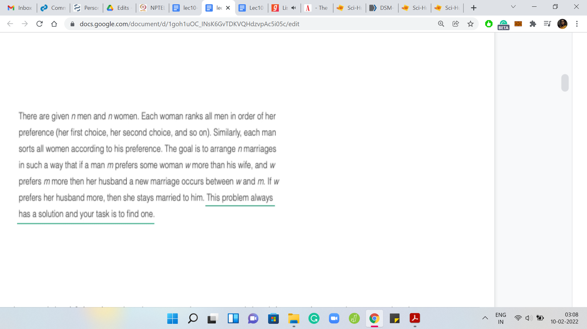
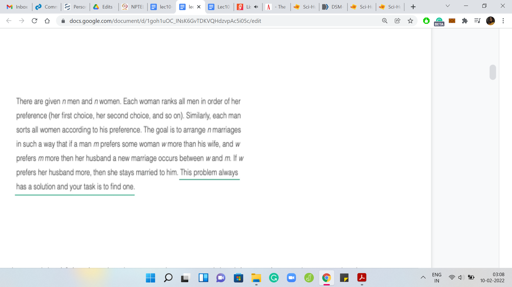
A matching is set to be stable if it simply does not have any blocking pairs and our task with this problem is to find a stable matching if one exists. Now I am saying ‘if one exists’ just to sound fancy.
If you actually look at the CodeChef problem statement, the last sentence of this paragraph guarantees that this problem always has a solution, which you might find surprising at first. When we come up with the algorithm, you will see that the algorithm itself doubles up as proof for why these stable matchings always exist.
(Refer Slide Time: 08:55)


Let us try to think about how we will go about this goal of finding a ‘stable-matching.’ What is the natural greedy choice here?
A first cut observation to make is that if somebody is matched with their top choice, then they are never going to be involved in a blocking pair. Because they are absolutely happy with what they have and they are not going to really be interested in forming a blocking pair with any other person. A natural greedy choice may be to match as many people with their top choices as is possible. Let us try to pursue this strategy with an example.
(Refer Slide Time: 09:34)


Here we have again, the four men and four women in our running example, and let me bring up the top choices for the men. You can see that both the king of spades and the king of hearts like the queen of hearts as their favorite option, and both the king of spades and the king of diamonds like the queen of diamonds as their favorite.
In the spirit of doing the greedy thing, let us try to see what happens if we try to match all of these gentlemen with their favorite options. As you can see, this is not going to be straightforward because there is clearly some competition. For instance, both the king of hearts as well as the king of spades will reach out and try to get matched with the queen of hearts, while both the king of diamonds and the king of clubs will try to reach out and get matched to the queen of diamonds.
Notice that both the queen of hearts and the queen of diamonds have a bit of a choice to make here, while the queen of spades and the queen of clubs are left stranded, at least for the moment. From the perspective of the queens that do have a choice, what choice do you think they should make? They can only pick one option because remember that the thing we want to finally output is a proper bijection. It is a matching.
These queens have to pick one choice. It may not be a permanent choice. It may be something that they could revisit later for reasons that we will see in a bit. But for now, they have to at least make a temporary choice disregarding one of the offers that they seem to be getting. The natural choice here would be, again in the spirit of ‘greedy,’ to pick the better option.
Notice that it is possible that these options are not very good for the queens in absolute terms. For instance, it is conceivable that these two options that they have are their bottom-most choices. But still, because there is a choice to be made, you just pick the relatively better one. In this example, let us say that the queen of hearts prefers the king of hearts over the king of spades and the queen of diamonds prefers the king of diamonds over the king of clubs.
They go ahead and make those choices, and you are left with this sort of tentative arrangement at this stage. What we have achieved so far is that these two kings have been matched to their favorite options and at least as long as this matching persists, these kings will never participate in blocking pairs. Of course, it is possible that we may have to modify this matching as we go along.
For example, especially if these queens receive better options in the future. Remember, we said that we are only looking at the top options from the perspective of the kings. These options that the queens have received may be some of their worst. It is conceivable that the queens receive better offers later on, and they may have to give up on their current alliances to forge new ones.
Notice that if that happens, the kings will still not participate in a blocking pair because the only people that they would care about forming a blocking pair with were taken away from them because they found better matches for themselves. Any of this admiration that the kings may have will not be reciprocated. This, of course, is getting a little ahead of ourselves.
If some of this does not make sense, do not worry about it. We will have more explicit examples and we will go over the overall algorithm once again. Do not worry if some of this sounded a little bit vague. Let us continue with our story here.
These kings have already been matched. The other two kings, who did not have any luck in the first round, are now going to move on to the second favorite options on their list. This time, the king of spades has the queen of spades as his second favorite option, and similarly, the king of clubs has the queen of clubs as his second favorite option.
These proposals are made to the respective queens and from the perspective of queens — well, it does not even matter where these gentlemen rank on their lists because we are intuitively in a situation where being matched is better than not being matched. Remember, we want to output a matching eventually.
The queens are simply going to accept this offer because it is better than nothing. They do not have to make any further comparisons because they do not have a choice, at least at this stage, and therefore these offers are accepted. Notice that all the men have been matched, and we have, in fact, a matching.
You can think about why would this matching, in fact, be a stable matching in this case because it was a simple example. We already know that the king of hearts and the king of diamonds have been matched to their top options so they do not participate in any blocking pairs.
The king of clubs and the king of spades could have potentially participated in blocking pairs with, say, the queen of hearts or the queen of diamonds. These are queens that they prefer more than their currently matched partners.
But notice that these two queens, just by construction, are currently matched to people that they like better than the king of spades and the king of clubs. So, they are not going to reciprocate the love and therefore these blocking pairs will remain incomplete.
You can hopefully convince yourself that the matching that we obtained for this particular example is a stable one. Let us go through another example, which is just a little more non-trivial, to really get a feel for what is happening.
(Refer Slide Time: 15:12)


We are back to the original situation with four kings and four queens and this time, let us say that the top options look like this. As you can probably tell, we are once again in a situation where the top options are concentrated on two of the queens. In particular, both the king of spades and the king of clubs have the queen of diamonds as their top choice and both the king of hearts and the king of diamonds have the queen of hearts as their top option.
Let us ask the queens what they make of the proposals that they have received. For the queen of hearts, let us say that the king of hearts happens to be her top choice. If this is the case, then the queen of hearts is going to reject the application from the king of diamonds and the alliance between the king of hearts and the queen of hearts is going to be forged at this stage.
Notice that this is a really good match because these are two people who have been matched to their mutually top options. This is a match that will never be revisited. In some sense, we will never need to change this because it really does not get any better than this, to put it intuitively.
Let us turn our attention to the queen of diamonds who has to make a choice between the king of clubs and the king of spades. Let us say that she likes the king of diamonds the best. But she does not have a proposal from him. So, let us ignore that for now.
Between the king of spades and the king of clubs, she likes the king of spades better. So, she is going to reject the proposal from the king of clubs and instead settle with the king of spades. This is the tentative arrangement that we have at this stage and we are still left with two kings that do not have a match yet. Let us turn to them and ask them about their next best options.
(Refer Slide Time: 16:56)
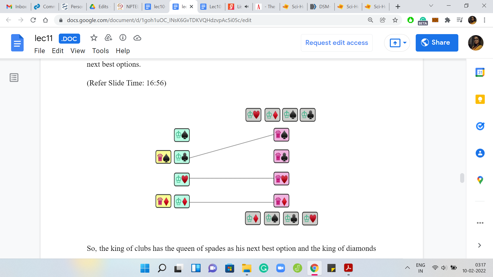
The king of clubs has the queen of spades as his next best option and the king of diamonds is the queen of diamonds as his next best option. Let us say that these kings go ahead and make these proposals. Notice that now we have an interesting situation. The queen of diamonds already is engaged, in some sense, to the king of spades from the previous round.
But now she has a more interesting proposal to consider. If you remember her preferences, she prefers the king of diamonds over the king of spades who is her current partner. Given that this new proposal looks tempting, should the queen of diamonds deflect and basically go with this new proposal breaking her old arrangement? Or should she just be loyal to her current partner and ditch the king of diamonds even though she likes him more?
Just think about what would be the appropriate thing to do given that we eventually want a stable matching, which is one without any blocking pairs. Hopefully, you had a chance to think about this because it is a really interesting question at this point. There is a tension between doing the seemingly right thing in terms of being loyal to somebody you have been matched with before and doing the thing that seems like the correct greedy choice in terms of optimality to the point where it almost sounds selfish.
What should the queen of diamonds do? Let us consider what happens if she decides to stay true to her current partner who is the king of spades. If she does that, then at the very end, she is matched with the king of spades and on the other hand, the king of diamonds is matched to somebody that he certainly likes less than the queen of diamonds.
Everybody that he liked more than the queen of diamonds, he has already been rejected by from previous rounds. In the current round, the queen of diamonds decided to reject his proposal as well. In the final matching, the king of diamonds is going to be matched with somebody that he likes less than the queen of diamonds. Notice that the queen of diamonds and the king of diamonds will end up forming a blocking pair because they mutually prefer each other over their ultimate matched partners.
Since this is precisely the situation that we want to avoid at the end, it would actually make a lot of sense for the queen of diamonds to actually break off her current relationship with the king of spades and accept this new alliance with the king of diamonds. It may seem like a painful thing to do, at the moment, but it will be for the best in the long run.
Notice that no actual rejections are happening. No actual breakages of engagements are happening. This is all background work that is being done by the algorithm and it is only the final matching at the end that will matter even in the context of a more real-world application.
Do not worry about any actual heartbreak. This is really all in the analysis. Now, it is much easier to think about the queen of spades who has only one proposal in this round. So, there are no choices to be made, and she just goes ahead and accepts the alliance with the king of clubs.
Now we still have one unmatched king, that is the king of spades who was matched before, but has now gone back to being single. Let us now consider the next best option for the king of spades.
(Refer Slide Time: 20:24)
 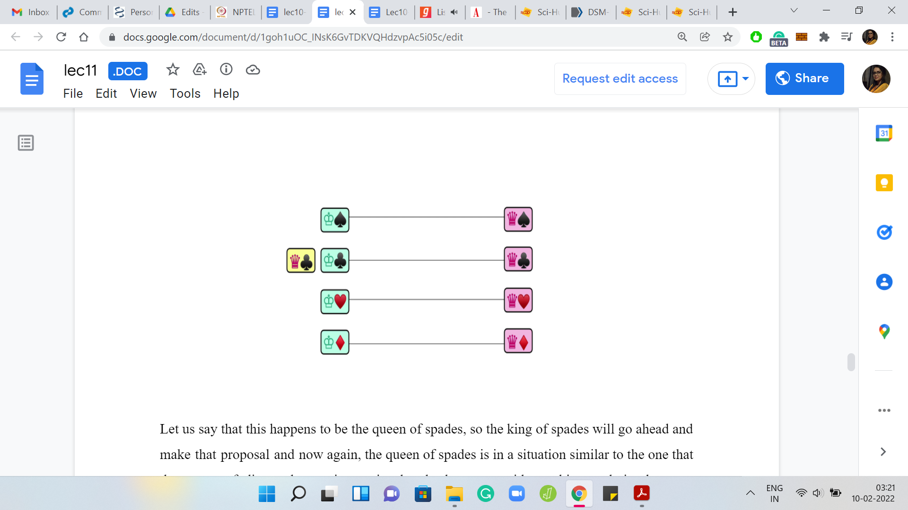
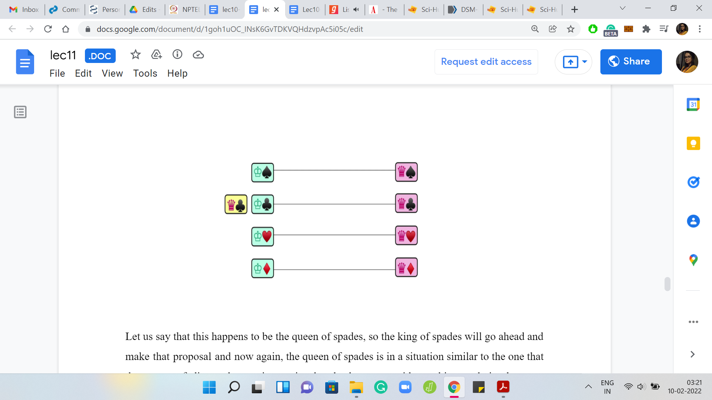
Let us say that this happens to be the queen of spades. The king of spades will go ahead and make that proposal. Now, the queen of spades is in a situation similar to the one that the queen of diamonds was in previously. She has to consider making a choice between accepting this new proposal and breaking off the old one versus rejecting the new proposal and keeping the old one.
What the queen does depends on how she compares her current partner with the potential new partner. Let us bring back her preference lists and observe that she actually prefers the king of spades over the king of clubs, and because of this she would want to actually accept this new proposal and break off her current alliance with the king of spades, much like the queen of diamonds of did before.
Notice that this may not always happen. If the preference was listed the other way, then the queen of spades would have maintained her current alliance and the king of spades would have to go back and try his luck with the next person on his list. But in this example, that is not how it plays out.
This is the current matching that we have at this stage. Now the king of clubs goes back to being single and makes a proposal to the queen of clubs, who is the next person on his list. This proposal gets accepted because the queen of clubs is single at the moment and because something is better than nothing. This is an immediate acceptance and we finally have a ‘matching.’
You can try to convince yourself that this matching is stable. That should be intuitive given that we had that at the back of our minds all along. Nonetheless, it is useful to actually prove this formally and instead of working in the context of this example, let us actually turn to the algorithm in full generality and try to argue the correctness also in slightly more general terms.
(Refer Slide Time: 22:25)

Just to recap what the algorithm is doing. We start off with the list of men and women and initially, nobody is matched to anybody, to begin with. This piece of pseudocode is borrowed from the book ‘Algorithm Design’ by Kleinberg and Tardos and you can find a pointer to the book website in the description of this video.
What we are going to do is basically run a ‘while’ loop for as long as there is a free man. A man who is still single and has not been matched to anybody. As long as there is such a man, what we are going to do is basically look at the highest-ranked woman for this man to whom he has not yet proposed or in other words, the highest-ranked woman who has not yet rejected him.
We have this man approach this woman, and what plays out from here will depend on the situation of the woman. If the woman is unmatched herself, if she is single because we have been saying that it is better to be matched than to not be matched, this proposal will have immediate acceptance. So, this match is made and we are done.
On the other hand, if ‘w’ is currently engaged, then she would have a choice to make between her current matched partner and this new proposal. We have seen this play out a couple of times in the last example that we discussed, so you should probably be able to predict what the algorithm does here.
Let us say that the currently matched partner is m’ and the new proposal is coming from “m.” Suppose ‘w’ prefers m’ over “m,” which is to say that she likes her current situation better than the new proposal, then she is just going to reject this new proposal, and “m” remains single and will have to go back and revisit his preferences and propose to the next woman on his list, which will happen naturally as you go back to the start of this ‘while’ loop.
On the other hand, if ‘w’ finds this new proposal more exciting than her current alliance, then she is going to break off her current alliance, and m’ now becomes a free man (gets added to the pool of single men) and the engagement between ‘m’ and ‘w’ is established – ‘m’ being the new person who is proposing to ‘w.’
That is pretty much it. That is how this progresses and once you stop, that happens when all men have been matched, and at that point, you have a set of engagements that you can finalize and claim to be a stable matching. There are a few useful observations to make about this algorithm.
First of all, let us argue termination. Because there is a ‘while’ loop involved and there are engagements being broken and men going back to being single, you might even suspect if there is a possibility that this algorithm keeps going around in circles and possibly never stops on some cleverly designed input.
If this thought is in fact bothering you, then I would encourage you to pause here and take a closer look at the pseudocode and see if you can find an argument for termination. One hint would be to think about the number of proposals that are being made and observe that the running time of this algorithm is really proportional to the number of proposals being made and see if you can bound that in some way. Come back when you are ready. Hopefully, you have had a chance to think about this. As we were just saying, the most basic question here would be one of termination.
(Refer Slide Time: 25:56)
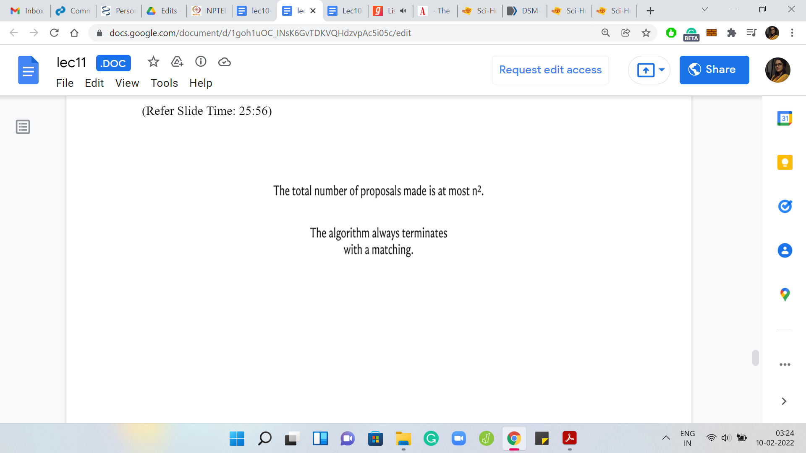 
Notice that the number of proposals that are made over any run of this algorithm is at most n2 because a man never proposes to the same woman twice. He is always walking down his preference list and there are ‘n’ men and every man has ‘n’ women to propose to. The number of proposals may never exceed n2 and this essentially drives the conclusion for termination.
We also want to say that the algorithm terminates with a complete matching. Nobody is left free at the very end. One of the reasons for this is that if somebody is single, then there is still some work to be done. There is still somebody that he can propose to. Notice that at every intermediate stage of the algorithm, the set of engagements form a valid partial matching, which is to say that you never have a situation where one man is matched with multiple women or multiple men are matched to the same woman.
What you have is a valid partial matching. It is enough to argue that at the very end, you do not have any single men. But as long as you have a single man, he still has some woman left on his list that he can propose to, so the algorithm has not yet terminated. Notice that the reason for this is that if he really proposed to every woman on his list, and he is still single that means that he was rejected one way or the other by every woman that he proposed to, either outright or by getting into an engagement and then being kicked out of it.
This only happens when the women are already engaged to somebody. But you cannot have ‘n’ women being engaged to ‘n-1’ men if what you are maintaining is a valid partial matching at every stage. Therefore, it is not possible for a man to be single, once the algorithm has terminated. But since every man is matched, and you have a valid partial matching at every stage, at the final stage you indeed have a complete matching.
(Refer Slide Time: 27:53)
 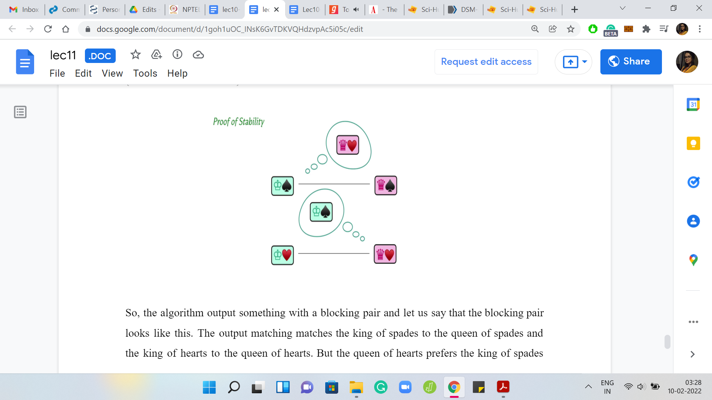
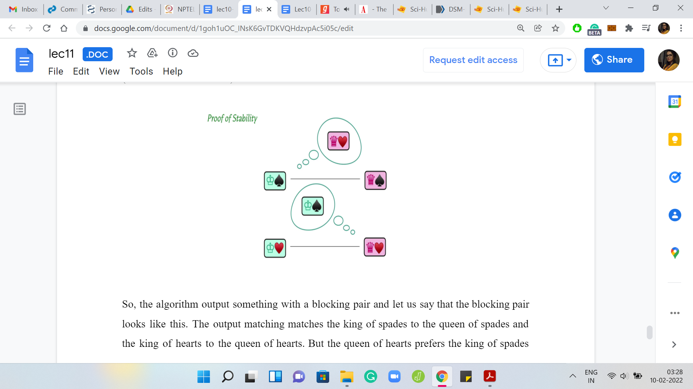
The last thing we want to claim is that this complete matching is, in fact, stable. The intuition for stability was probably already established when we were making some of these greedy choices with respect to the proposals and the rejections. Let us once again recap the reason why the output matching is, in fact, stable. One way to argue this is by contradiction. Let us say that the output matching was not stable.
The algorithm output something with a blocking pair and let us say that the blocking pair looks like this. The output matching matches the king of spades to the queen of spades and the king of hearts to the queen of hearts. But the queen of hearts prefers the king of spades over the king of hearts and this love is reciprocated in that the king of spades also prefers the queen of hearts over the queen of spades.
If the situation were to really arise, can you think of a contradiction in terms of the behavior of the algorithm? In particular, think about the proposals that the king of spades would have made during the run of the algorithm and think about how the queen of hearts should have reacted at a certain point.
Please feel free to pause the video here and really think through the proof yourself before continuing. Consider the king of spades and the proposals that he makes. Before he proposed to the queen of spades which he must have done to be finally engaged with her, he must have first proposed the queen of hearts. Because the assumption here is that the king of spades prefers the queen of hearts over the queen of spades. So, she would have come first in his list and would have been approached before the king of spades approached the queen of spades.
The real question now is: What did the queen of hearts do when she was proposed by the king of spades? Given that they are not matched in the output, it must have been the case that the queen of hearts rejected this proposal in one way or the other. Either it was rejected immediately or it was accepted and rejected in a future iteration in favor of a better proposal. But notice that if the queen of hearts did indeed reject the king of spades, either immediately or later on, it must have been because she was in a better situation than the king of spades.
It could not be possibly the case that she likes her current matched partner less than the king of spades as stipulated by this blocking pair scenario. Hopefully, it is at least intuitively clear why we are not going to have blocking pairs because really the greedy choices were geared towards avoiding them in the first place.
Please feel free to take your time to work through this yourself and hopefully convince yourself that everything does work out in terms of both termination and obtaining a complete matching and also ensuring that this matching was a stable one. This brings us to the end of the description of the algorithm. You probably have enough, especially if you go back to the place where we discussed the pseudocode, you probably have enough to actually code this algorithm yourself now.
Please feel free to take a break and do that and come back to the rest of the content once you have given it a shot yourself. For this particular module, we are going to split up the implementation into a separate video and I will see you there!